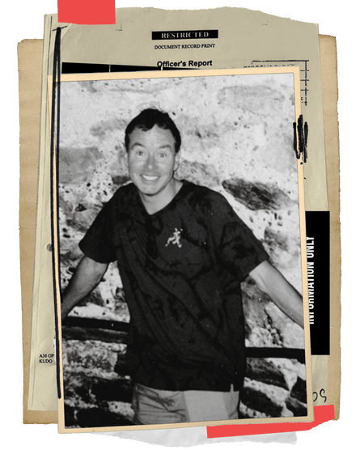
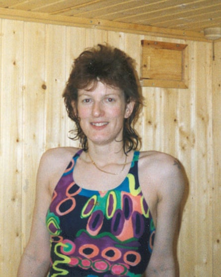
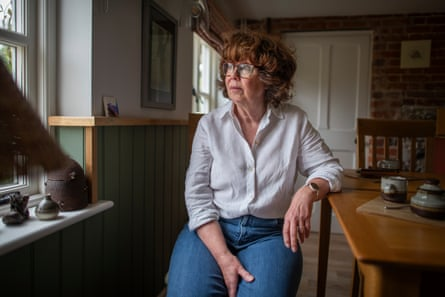
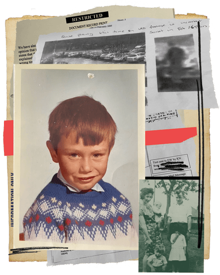

After the murder of his ex-girlfriend Dawn Walker, in 2005, Kevin Nunn insists he told Suffolk police everything. Of course he did, he says – he was desperate to help them track down her killer. He explained how they had split up two days before she was found, how he had gone to her home after she had left a distraught voicemail on his phone and not turned up to work, how he had let himself in with a key she didn’t know he had, and how he went looking for her along their favourite walking routes by the River Lark, north of Bury St Edmunds. He then handed over the pair of boots he had worn when searching for her.
The body of Walker, 37, was discovered close to where Nunn said he had looked for her. Not surprisingly, his footprints were also found. Six weeks after she went missing, he was charged with her murder. Nunn, 64, who has spent 20 years in prison, says telling the truth was the worst thing he could have done. He believes he unwittingly provided the police with everything they needed to build a case against him – the motive, the map and the circumstantial evidence that led to him being convicted of murder.
Kevin Nunn before his conviction.Composite: Guardian Design; Mimi Mollica; Courtesy of Brigitte Butcher; Getty Images
“It’s hard to look back at how naive I was,” he told me recently in a letter sent from his prison in East Anglia. “But when you’ve got nothing to hide and you’re innocent and you trust the police, you’re going to be open and honest. I had nothing to hide because I wasn’t involved in Dawn’s murder directly or indirectly. I didn’t see myself as a suspect, I saw myself as someone helping the police, and I think that’s the most foolish thing I ever did, in hindsight.” If he could have his time over again, he says, he would have hidden the boots or said he had worn other footwear – not because he would want to deceive the police, but because he thinks it might have protected him from being wrongfully convicted.
Nunn grew up on a council estate in Bury St Edmunds. He was born prematurely, weighing less than 3lbs (1.35kg). “He was my little brother in every sense. He was so much smaller than the other boys at school,” says his sister, Brigitte Butcher, a former nurse with an easy warmth. She has always looked out for him in one way or another, and has campaigned for him ever since his conviction.
Their father was a lorry driver, their mother a shop assistant who had come over from Cork, Ireland, at the age of 15. She had grown up in poverty and had high hopes of a better future for her children. “Mum always thought we were better than everybody, and in the end I think we believed it,” Butcher told me in 2013, when I first wrote about Nunn with the Guardian’s prisons correspondent, Eric Allison, who died in 2022. In 2013, Nunn had been in prison for eight years, and he seemed an unlikely killer. He had never been in trouble with the police, and had no history of violence.
Nunn left school at 16, got a job as a gas welding equipment salesman, stuck at it and did reasonably well for himself. He worked hard, played golf and enjoyed nice holidays when he could afford them. “He was just my run-of-the-mill, slightly boring brother Kevin,” Butcher said at the time.
In 2005, Nunn, who was divorced with two children, had been going out with Walker for about two years. It was an on-off relationship, and just before she was murdered it appeared to be off for the final time. They realised it wasn’t working out, and she admitted to him that she was thinking about returning to a former boyfriend. They had split amicably before, and, he says, they now did so again.
On 3 February 2005, the morning after they split up, Walker’s employer called Nunn, her emergency contact, to say she had not turned up for work. Nunn has always claimed he had already planned to go round to her house because of the distressed voicemail, but this now made it an emergency. He knocked on the door, and when there was no answer he used the key he still had to enter her home. There was no sign of her. Later that day, Nunn says he went looking for her around the spots where they often went for walks. If she was still upset, he suggested, perhaps she was walking it off. He reported her as a missing person to the police the next day.
A few hours later, at about 5pm on 4 February 2005, Walker was discovered by the River Lark, barely a mile from where Butcher and Nunn grew up. Her hair had been shaved off, her body had been set alight with petrol and she had been dumped naked from the waist down. The cause of death was never identified.
Dawn Walker.Photograph: Chris Ison/PA
A week before the trial began, in October 2006, it was disclosed to the defence that semen, containing a small amount of sperm, had been found on Walker’s thighs and pubic bone. When Nunn was told this, he did not realise its significance, but his sister did. Nunn had undergone a vasectomy, which meant he could produce semen but not sperm. He was tested and, sure enough, no sperm was produced. Butcher had always been convinced that her brother would be cleared, and now she believed he had to be. But he wasn’t.
In a story full of surprising scenarios, perhaps the most surprising was proposed by the prosecution. Although there was no evidence of Walker having had sex just before being killed, they insisted the sperm was unconnected to her murder, and had been picked up by a “secondary transfer”. She had been at the gym of the Suffolk golf club with Nunn on the evening the couple split up, and the women’s changing rooms were being decorated. It was suggested by the prosecution that Walker had used the men’s changing rooms and that the sperm was either the result of Walker sitting on a bench or a gym towel freshly stained with sperm. The forensics expert for the prosecution, Helen Hawarth, agreed this was a possibility, but conceded it was unlikely. The defence suggested a more likely starting point was that Walker’s killer had masturbated over her body, pointing out that the crime had the appearance of a sexual attack, as she had been left with her vagina exposed and a reed found in her anal passage.
Butcher has always found the prosecution’s argument hard to countenance. “This is a respectable golf club and it’s an open changing room. I’m sure men don’t come in masturbating after their shower with everyone coming and going. It’s just not happening, is it? This is where she supposedly sat on the bench with this huge gush of sperm that washed up on her leg. Absurd. Are they saying she sat on it and it all splashed up? Is that how much there was there? But according to Helen Hawarth, there was only a small sample. They can’t have it both ways, can they? It’s farcical.”
As far as Nunn is concerned, the investigation and trial were profoundly flawed. Ten days after the main witness for the prosecution, a neighbour who lived in the same close as Walker, had told the police she had seen nothing, she went to the police and changed her story. She said that she had heard people arguing in the street between 10 and 10.30pm on Wednesday 2 February and that they sounded like teenagers, although she wasn’t sufficiently worried to check. The prosecution argued that it was, in fact, Nunn and Walker arguing. (Another neighbour said he had seen a man arguing with Walker at her front door at about the same time.)
The main witness said she had driven past Walker’s house two days later at 4.45am, on her way to an early shift at work, and that she had seen two suspicious-looking men struggling to load a large object that could have been a rolled-up carpet or a large laundry bag into the back of a silver estate car. The witness identified one of the men as being Walker’s “boyfriend”, and she later picked out Nunn at an identity parade. At the trial, however, she admitted that she had been asked by the police to pick out Walker’s boyfriend from the lineup. In court, the prosecution argued that the rolled-up carpet or large laundry bag contained the dead Walker. The police and forensics experts found the house undisturbed, with no sign of struggle.
What makes the case even stranger is that a man called Nigel Hill was charged alongside Nunn. Hill worked with Walker, was a close friend and former boyfriend, and he drove a silver car. Nunn and Hill have always insisted that they knew of each other but had never met before Walker’s disappearance.
Nunn knew Hill was a friend of Walker’s. When he found Walker’s house empty, he contacted Hill, and asked if he knew where Walker was. Hill said he didn’t, and he also turned up at her home. He later told Suffolk police that, like Nunn, he was worried and wanted to know what was going on. The police decided they were partners in crime. For Butcher, this was always a nonsense. “They’d both had a relationship with Dawn, that was their only connection. So what is the narrative? ‘I’ve killed your best friend from work, can you come and help me move the body?’ Was that the storyline? It’s just absurd, isn’t it?”
‘The last thing my mum said on her deathbed was: you won’t give up fighting for Kev, will you?’ … Brigitte Butcher.Photograph: Joshua Bright/The Guardian
The narrative initially put to the prosecution was so elaborate that Nunn says he still struggles to get his head around it: Nunn and Walker had split up on 2 February, he had killed her in an unknown place, brought the body back to the house after visiting her home with Hill on 3 February, and then at 4.50am the next day had removed the body with Hill in a rolled-up carpet or laundry bag and deposited her by the river.
Eventually, the prosecution agreed that it was absurd for Hill to be in the dock simply because he owned a silver car and had visited Walker’s home after she went missing. Midway through the trial, charges were dropped against Hill without him having given evidence. Nunn assumed he would be going home, too. After all, if the case against his supposed accomplice had collapsed, surely his would. But it didn’t.
There were other improbabilities. Although Nunn was charged with a horrific murder, in January 2006 he was released on bail for 11 months until he was convicted. Throughout the trial, he walked to court from his rented property. “The judge at Ipswich said [to police]: you need more than this to keep him in prison till the trial,” Butcher says. “There were two psychiatrists who assessed Kevin to see if he was safe to be out on bail. Those two psychiatric reports [also] said there were no tendencies to be overly jealous or dangerous. I said to his probation officer: ‘Have you ever known anybody charged with such a terrible murder not to be held in custody?’ He said: ‘No, I have to say I haven’t.’”
The various suspects were mainly former boyfriends of Walker’s, all of them local. The main witness was asked about another suspect, who we will call X, a former boyfriend of Walker’s with a conviction for exposing himself to young girls. X (who was also a witness for the prosecution) had boasted to the main witness that he knew how to carry out the perfect murder. Under cross examination, the main witness was asked: “And you agree that you found this particular conversation with him before Dawn Walker’s murder so disconcerting and frightening that it stuck in your mind and you felt you had to tell the police of this extraordinary confession he made to you?” “Yes,” she said. Walker was found at Duck Sluice Farm, close to where X regularly walked his dog. He had told the main witness that to commit the perfect murder he would “put his fingers near the windpipe around the neck so there would be no evidence left behind” and that he would have to “burn the hair to get rid of the DNA”. The witness acknowledged that there was “lots” that was “similar” to the details of Walker’s murder and the perfect murder that X had described to her.
The prosecution portrayed Nunn as obsessive, jealous and devious. First there was the key. A few months earlier, the couple had briefly split up. Walker had asked for her house key back and he had made a copy of it. What kind of man secretly gets a key made for his partner’s house and keeps it after they split up? Nunn, who volunteered the information about the key, said that he had never given the key back because they usually got back together within hours, and this time they had only just separated. “It was very poor judgment on my part to get the copy made,” he told me recently. “People judge you on that, and say that’s his character. And it’s just not the case.”
Then there was the evidence of another former boyfriend whom Walker was thought to be returning to. He told the jury that she had said Nunn was jealous, giving as an example the time she had left the gym to go for a drink with a fitness trainer and Nunn had followed them. Nunn admitted this was true, and said it had happened shortly after the couple had agreed they were in an exclusive relationship and that he had wanted to know where he stood. He followed her car in his car for a short distance, he said, then they stopped and had a chat. Walker told him she was going for a drink with the trainer and a few others, and asked him if he fancied joining them. Nunn said he declined and, although he’d been miffed, it wasn’t a big deal between them. But the notion of him being possessive was reinforced by Nunn’s ex-wife, who gave evidence for the prosecution. After an acrimonious divorce, she said he had acted as if he had “a kind of ownership” of her.
As with many alleged miscarriages of justice, so much depends on the timing of events, and whose version is ultimately believed. In Nunn’s case, the disputed time starts with the CCTV footage at the gym that he and Walker attended the evening they split up. Nunn insisted that he was in bed asleep between 10 and 10.30pm, the time that Walker was alleged to be having an argument with a man on her doorstep. Yet he is shown leaving the gym at 9.30pm, and this was a key factor in the case. However, look at the timing on the car park CCTV, and something doesn’t add up. On an early February evening, footage from before he arrives says the time is 5.30pm but it’s still light, suggesting that the CCTV clock is ahead of the actual time. On the gym log, Walker signs out at 8.15pm.
A photo on Brigitte Butcher’s phone of herself, aged six, left, and Kevin, aged four.Photograph: Joshua Bright/The Guardian
Nunn says he and Walker left the gym separately, soon after 8.15pm, and he drove to her house in his gym clothes to discuss their relationship, which seemed to be fizzling out. That’s when they decided to split up, and he says he left Walker’s home soon after 9pm. But the prosecution insisted that he had left the gym at 9.30pm.
The CCTV had a disastrous impact. First, it put him in the frame for the row in the street (although the witness said the man was smartly dressed in a suit and coat and Nunn was seen leaving in gym clothes). Second, it undermined his credibility. The jury believed he was a liar. Not only was this a man who had made a copy of a key to his girlfriend’s house and kept it when they split up, but he was also lying about the time he left the gym.
Yet he was telling the truth about the time. In the bundle of documents disclosed to the defence was a police statement saying that they didn’t know exactly what time Nunn left, but acknowledging that the CCTV was 70 minutes out of time. Although this point was made by the defence, the jury chose to believe the prosecution.
Despite the lack of forensics, despite the unsupported witness evidence, despite his co-defendant’s case being thrown out, Nunn was found guilty and sentenced to a minimum of 22 years in prison.
Butcher recalls the jury returning their unanimous verdict, on 20 November 2006, as if it were yesterday. “Dawn’s family were all whooping and shouting, and my dad looked at me and I remember going out and falling on my knees and screaming.” The emotion is still raw. “It’s very dramatic, isn’t it? But I was so shocked. I went to get my dad, then I thought: ‘Oh, where’s Kevin? But they’d taken him down by then.’”
The trial judge, Mrs Justice Cox, described Walker as an “outgoing, conscientious and dependable” woman who enjoyed an independent and active lifestyle with many male and female friends. In her sentencing remarks, she said that Nunn had been ‘‘consumed by jealousy” when Walker had told him she wanted to rekindle the relationship with her former partner so “you decided if you couldn’t have her no other man could … Exactly what you did to her when you killed her I don’t know but I have no doubt that you intended to kill her.” Cox said the crime had had a ‘‘devastating effect’’ on Walker’s family, and that an aggravating feature of the case was the way the defence had sought to point the finger of blame for Walker’s death at one of her former boyfriends.
Yet so many questions remained unanswered – the unidentifed semen, the apparently discrepant CCTV footage, the time and place of the murder. Cox said it was not known where Nunn had kept Walker’s body after killing her and who had been helping him when he was supposedly seen struggling to put her concealed body into a car.
Nunn is due for his first parole hearing in 2028, but he knows he is unlikely to be released then. He has refused to do the rehabilitation courses that are the usual pathway to freedom because he has maintained his innocence. Parole relies on addressing offending behaviour. If he is ever released from prison, he believes it will be because his conviction is quashed rather than because he has served his time.
This February, 12 years after I last spoke to Brigitte Butcher, she rang and told me Nunn was still in prison. I was shocked, because the case against him had seemed so full of holes and his conviction so unsafe. I also felt terrible, because I have rarely thought of Nunn in that time. As journalists, we move on to the next story. But there is no moving on for Nunn.
There are prisoners I’ve met whom I will never forget. But Nunn isn’t one of them. He is not a charismatic man. Butcher told me as much years ago. Perhaps that’s why his case has not attracted much attention. She fills me in on everything that has happened in the intervening years. Butcher is now in her mid-60s, has retired from nursing and is still fighting for her brother. But Nunn seems no closer to clearing his name. His case has been with the Criminal Cases Review Commission (CCRC), the body that deals with alleged miscarriages of justice, for much of the past 10 years. It rejected his first submission for grounds to appeal in 2019, and has now spent almost two years looking at his second submission without deciding whether to refer the case back to the court of appeal. (Convictions can only be overturned by a panel of judges at the court of appeal.)
The CCRC, which was set up in 1997 after a series of prominent miscarriages of justice in the 1970s and 1980s, is under fire. In its early days, able and driven commissioners were appointed on handsome salaries (£93,796 in 2013). Since then, the full-time staff job has been removed and commissioners are now contracted to work 52 days a year at £460 a day. While this may be an attractive shift rate, it amounts to less than £24,000 a year. Not surprisingly, the commission has been unable to find enough commissioners to do the job and has only 10, one short of the statutory minimum.
Even with a full complement of commissioners, the CCRC is sloth-like and rarely uses its special investigative powers. Over its lifetime, it has referred an average of only 3% of cases, but that rate has now slipped to less than 2%. While it claims this is because it does its work so well and that only about one in 50 cases have a realistic chance of being quashed by the court of appeal, critics such as the miscarriage of justice charity Appeal say it is because the CCRC acts as a gatekeeper, turning down cases despite their merits because it thinks the court would eventually reject them.
In April, the CCRC’s then chief executive, Karen Kneller , and the casework operations director Amanda Pearce appeared before the cross-party justice committee in the House of Commons. They revealed that they only went into work at their Birmingham HQ one or two days every couple of months, had failed to recruit commissioners for more than two years and were nowhere near appointing a new permanent chair to replace Helen Pitcher , who was forced to resign in January after successive justice secretaries said they had lost confidence in her. Kneller, who has been nicknamed “Karen Invisible” by staff, admitted that she had been rewarded with “additional payments” in the past two years, despite the criticism her organisation has faced, and that she didn’t know what they were for, and hadn’t inquired. This month, Kneller resigned from the CCRC, and Pearce was appointed interim chief executive.
Andy Slaughter, the Labour MP for Hammersmith and Chiswick, and chair of the justice committee, did not hide his disgust at the CCRC’s remote working policy. He told Kneller: “Given what’s happened with your chair, the [Andrew] Malkinson case and other matters that have come to light, if I was the chief executive here I’d be in every day. I’d be asking my staff to be there. I’d be working with those staff trying to rebuild the organisation … and that doesn’t seem to have happened at all.” He concluded: “There seems to be a hole at the heart of this organisation,” and questioned whether Kneller and Pearce were the right people to rebuild confidence in the CCRC. On 23 May, the justice committee published a damning report on the CCRC, and said Kneller’s position was no longer tenable.
The Andrew Malkinson case has done the greatest damage to the CCRC’s reputation. When Malkinson had his conviction for rape overturned after spending 17 years in prison, the finger pointed clearly at the commission. He had twice put in submissions to the CCRC and twice been rejected – the first time in 2006, 17 years before he was cleared – on forensics. It was the CCRC’s job to do the forensics test on his victim, but it refused to do so, citing cost as a primary factor. In the end, it was left to Appeal to carry out the DNA tests that linked the crime to another man. It was a shameful series of failings by the CCRC.
By law, the CCRC can refer a case to the court of appeal only if it considers there is a “real possibility” that the conviction or sentence would not be upheld. “That’s a huge problem,” says Jon Robins, the editor of the Justice Gap, an online magazine that investigates unsafe convictions. “A quick fix to boost confidence in the commission is to scrap the ‘real possibility’ test. Its predictive nature means that the CCRC has been forced to second-guess the court of appeal. If you have an increasingly conservative court of appeal – which we do – then you’re left with an increasingly conservative CCRC. Our criminal appeals safety net mechanism becomes locked into a self-defeating spiral with fewer and fewer cases going back to the courts.
“In a consultation paper published earlier in the year, the Law Commission proposed replacing the ‘real possibility’ test with one based on the commission’s own view of the case. Everyone who spoke to the Law Commission agreed it was a problem – with one exception: the Crown Prosecution Service [CPS].”
Last month, Dame Vera Baird KC was appointed temporary chair of the CCRC, bringing the number of commissioners up to 10. Baird, a former Labour MP, justice minister, solicitor general, police and crime commissioner, and victims’ commissioner, is hugely experienced. Her interim appointment, until December 2026, suggests that the government is serious about addressing the crisis at the CCRC. The Ministry of Justice said: “The lord chancellor has requested that Dame Vera carry out a thorough review of the operation of the CCRC, to increase public confidence in the organisation and the important work it undertakes investigating potential miscarriages of justice.”
After her appointment, Baird told BBC Radio 4’s Today programme that the commission operated in an “arrogant, dismissive way … almost looking for reasons not to refer to the court of appeal”.
Which brings us back to Nunn. From the start, there was no DNA connecting him to the murder. But there was sperm that linked another, unidentified man to Walker. Even though the prosecution argued that the sperm was irrelevant, Hawarth for the CPS said that although DNA testing was not currently sophisticated enough to trace it to its owner, it could become so in the future and ordered the sample to be kept. The police named a number of suspects and “persons of interest” after Walker’s murder, most of them former boyfriends and two with a history of violence. The sperm has never been tested against the DNA of the other suspects or the police database.
In 2012, the high court refused Nunn access to case materials held by Suffolk police that he believed could clear his name. Lord Thomas of Cwmgiedd, who went on to become lord chief justice of England and Wales, said he could rely on the CCRC to demand access to any relevant materials. In 2014, Nunn’s lawyer James Saunders took the case to the supreme court, arguing that the police and the CPS had a continuing duty of care to assist Nunn in gathering and examining evidence that could prove his innocence.
In 2015, the actor Tom Conti joined Nunn’s campaign for further disclosure after learning about the case from the charity Inside Justice, which conducts casework investigations on behalf of people who claim they have been wrongly convicted. Conti believed Nunn might well be innocent and, in 2015, he wrote to the then home secretary Theresa May, saying: “The chief constable of Suffolk refuses to hand over the exhibits. What could possibly be his reason? Does he fear humiliation for his force if Nunn proves to be innocent?” The actor offered £1,000 to help pay for new laboratory tests.
But the supreme court ruled that neither the police nor the CPS had a responsibility to further assist Nunn, saying that access to such material was only required where “there appears to be a real prospect that further inquiry will uncover something which may affect the safety of the conviction”. The court ruled this threshold had not been met and that the only channel for Nunn to go through was the CCRC. It regarded Nunn’s appeal for further post-conviction disclosure as a fishing expedition. Critics pointed out it’s only by going on fishing expeditions that you catch fish.
After that ruling, one of Walker’s sisters said: “To hear the judgment today is very uplifting; to hear they still think he’s guilty. I’m very relieved with the news and very happy with the news and let’s keep fighting to keep him behind bars.”
The supreme court decision not only had a potentially significant impact on Nunn’s case, it also had an impact on all potential wrongful convictions. It meant that victims of miscarriages of justice were now wholly reliant on a proactive CCRC using its statutory powers to demand disclosure and testing of evidence that could clear them. The CCRC, though, was anything but proactive. It was dormant, impoverished and underresourced. When Saunders sent a submission to the CCRC on behalf of Nunn in January 2015, he was told it had so much work on that it would not be able to look at it until September.
The commission finally got back to him four years later, in 2019, rejecting his appeal. What shocked Nunn was the grounds on which it was rejected. The commission had sent off the semen sample, and even though, at the trial, it had been unambiguously cited as sperm, the new forensics lab now said it was yeast.
When Nunn was jailed, Butcher’s belief in justice was dented. Then she began to experience first-hand the failings of the CCRC and the little remaining faith she had was shattered. She decided that if her brother was going to be cleared, and couldn’t rely on the commission doing the necessary investigations, she would have to do them herself.
She started working with a private investigator, Carol Parish. They visited relatives and friends of the suspects, taking statements from whoever was willing to provide one. The former wife of one suspect told Parish that she had been waiting to be asked about his possible role in the murder, describing him as a “Jekyll and Hyde” character and recounting an occasion when he’d grabbed her by the neck and pinned her against the wall. Butcher didn’t know if this story was significant, but it made her more convinced than ever that Walker’s killer was still out there somewhere.
Butcher is no longer working with Parish, who is in poor health, but is still doing her own detective work. She has not given up on tracking down the killer or killers. According to the prosecution, there were two people involved in the murder, but there appears to have been no attempt by Suffolk police to track down a second killer.
Her most recent investigation has been into the Scottish police authority (SPA) lab that said the “sperm” found on Walker may well be yeast. She did a bit of digging, and discovered to her surprise that Hawarth, the lead forensic scientist for the prosecution in 2006, is now head of function at SPA Forensic Services and a colleague of Amanda Pirie, the forensics expert who now believes it is yeast. “Hawarth was adamant it was spermatozoa when she was acting for the prosecution. And now she’s working alongside someone who’s cast doubt on whether it is spermatozoa when it could potentially clear Kevin.” When invited by the Guardian to comment on its findings, the SPA declined to do so.
Saunders wrote back to the CCRC in January 2019, expressing his bafflement. First, he stated that Pirie did not seem to have tested all the slides for sperm, and asked why the CCRC was so “incurious” that two such different conclusions had been reached. Saunders told the CCRC that he had written to the SPA asking whether Hawarth “was willing and able to review the case materials, and she reported that both she and her employer, the Scottish police authority, are willing for her to do so on their time and premises, with no cost to the CCRC, in view of the importance of matters”. All the CCRC had to do was ask and it would be done. Saunders said that it would be “simply irrational not to allow Mrs Hawarth to review the materials involved in the exhibits” and that “to dismiss her evidence without knowing her comment is unreasonable”. The CCRC failed to respond to Saunders on these points, and closed the case. In 2022, Saunders put in a new submission to the CCRC on behalf of Nunn.
After Malkinson was failed so badly by the CCRC, a review was commissioned of its work from Chris Henley KC. One of its conclusions was that new forensic trawling exercises should be carried out for new DNA testing opportunities of certain historic cases. This February, Inside Justice, which now represents Nunn, received a letter from his CCRC case review manager stating: “Mr Nunn’s case has been identified as fulfilling the criteria for that trawl and a separate team has been considering the case in parallel to my review.”
Kevin Nunn as a boy.Composite: Guardian Design; Courtesy of Brigitte Butcher; Mimi Mollica; Getty Images
In March, Nunn writes to tell me I have been added to his approved phone list. He says in prison he has no friends and rarely speaks to people. Fellow prisoners will sometimes say a word or two to him if they are alone together in the yard, but if they are joined by anybody else they talk over him and pretend he’s not there. His crime is regarded as beyond the pale, and he is ostracised – other prisoners don’t want to be seen associating with him.
He has made use of his time in prison. Having left school at 16, he studied through the Open University in prison, gaining a degree in business studies in 2018. He works in the prison gardens during the day, reads fiction and non-fiction (he recently finished the historical novel Human Traces by Sebastian Faulks and 21 Lessons for the 21st Century by the philosopher and historian Yuval Noah Harari ), and examines and re-examines the evidence, looking for any chink that could clear him.
Five weeks after Nunn writes to me, on a sunny April day, Butcher meets me at Melton station, near Ipswich. She likes driving and owns a top-of-the-range Mini. Last time she drove me, when I first wrote about Nunn, in 2013, it was to a narrow track in boggy, brambled woodland in the middle of nowhere. She had to stop the car a good walk from where Walker’s body was found. The point she was making was that Nunn would have needed superhuman strength to carry Walker that distance – not least because he is 5ft 8in (1.7m) and built like a bean sprout and she was 5ft 11in (1.8m) and Amazonian. “How was he supposed to have carried this great big strapping woman?”
Today, she is driving us to a remote prison in East Anglia where Nunn has spent the past three years. We have only been back in touch for a few months, but Butcher is one of those people with whom you can pick up where you left off decades ago. I tell her that Nunn said in a recent letter she’s the only person he trusts in the world. “It’s just so sad, isn’t it? Sad that he can’t trust anybody else, and sad that when he does get out, how will he be?” Both Nunn and Butcher have got a habit of ending sentences with questions.
She talks about how important it is to still be fighting for Kevin – for his and their parents’ sake. Their father, who spent his life savings trying to clear Nunn’s name, died in 2016; their mother in 2021. One of the things her mother found most distressing in her final years, Butcher says, was a TV film made about the murder. It is regularly shown on Sky TV, she says, and each time the “repercussions are terrible” for Nunn in prison because fellow inmates judge him for it. “I tried to get it taken down but I couldn’t. It tormented my mum. The last thing my mum said on her deathbed was, ‘You won’t give up fighting for Kev, will you?’”
Nunn and I have spoken on the phone and exchanged letters, but this is the first time I have met him. He is sitting behind a table dressed in a black and white Adidas top and black trousers. He’s underweight, a little hunched, sombre-looking. In old photos of him, he’s smiling and boyish. I ask how life has changed since we were in touch 12 years ago. He looks at Butcher. “Well, you’ve aged since I’ve been inside, haven’t you?”
She laughs. “Charming!” she says. “He deserves to be inside just for saying his sister looks like an old hag. Well, I told Simon, you’re boring!” He looks at her affectionately. Butcher is funny and emotional; Nunn introverted and understated. While she expresses herself in italics and exclamation marks, he does so in a dour monotone. But there is no escaping the passion of his words. In a letter he sent me, Nunn said: “Without my heroic sister I doubt if I could have survived. It’s a nightmare you don’t wake up from.”
He looks different from the other men in the visiting room. They are younger, stronger, more robust. Nunn seems diminished. I ask how he feels after 20 years in prison. “Well, you don’t get used to it, do you? It’s an incomprehensible experience.” He says the shock never goes away; you simply get reshocked on a daily basis. “For the last 20 years, I’ve been looking to find evidence that would exonerate me. If you’re innocent, why would you give up? And because I am innocent the truth is still there to be found, so why would you give up? Why would you stop?” Nunn sounds quietly desperate. He takes a sip of his Diet Coke, and continues.
“How d’you explain something that very few people have had experience of? That catastrophic thing is thrown at you.” He’s talking about the actual murder of Walker. “You try to make sense of everything and before you do you wake up to the fact that you’re a suspect and you think that can’t be possible, they’ll find the truth, and all you’ve got to do is wait, and then there’s a knock on the door and you’re arrested for it, and then after that you’re in prison and that’s just a completely awful alien environment because you don’t have the history and background of the vast majority of people in here. So it goes on, and it’s just continuous. It’s still here and to be dealt with. And the only thing that’s left is to keep looking for the truth.”
He believes that the only way he will prove his innocence is by finding who did kill his former girlfriend. “That seems to be the threshold. I know that’s not the test and it shouldn’t be the legal threshold for an unsafe conviction, but that seems to be where we are. That’s why the whole focus has been on the forensics.”
Nunn talks to me about the message he says Walker left on his phone at around 4.55am on Thursday 3 February 2005, the morning after they split up. He says she was upset, crying, and that she told him that she loved him. He says it left him confused – she’d never told him she loved him before. “I woke up on Thursday morning and found this message.”
As he talks, you sense this is a man who is used to not being believed. “As I’ve said hundreds of times before, there was a message, it was Dawn’s voice, and she was sobbing and upset. It goes on for a number of seconds. There’s a lot of sobbing and I stopped the message. It confused me because neither of us were that upset when we left the night before. And now I couldn’t understand why she sounded so upset. And I deleted it.”
He asks himself the question he’s asked himself thousands of times: “But why would you keep it?” Nunn says he destroyed the evidence that undermined the prosecution case because there didn’t seem any point in keeping it. “I deleted it. But why would you keep it?” he asks himself again. “I was going to see her later and ask her why she was so upset. There was no need to keep the message. What was I going to do, say: ‘Listen to your message, you’re upset’? I was anticipating seeing her, that’s why the message was deleted.”
Walker’s phone records revealed that she had called him at 4.42am and that he had not answered. The prosecution speculated that the call was made by Nunn using Walker’s phone to give himself an alibi. Again, the jury chose to believe the prosecution’s version that a message was never left. Walker’s records also reveal that Nunn sent her a text message at 10.13pm on 2 February, the time he was supposed to be arguing with her on the doorstep.
I ask if he loved Walker. He says it’s hard to know now. He’s lost perspective on everything. “I couldn’t honestly say. I thought I did at the time. But if you’ve gone through what I’ve been through, it puts a whole different complex on life.”
Does he think about her much? “Well, yes, primarily who murdered her and why? So that eclipses everything. That is what’s at stake here. The one thing we could do right for her is find out the truth, and we’re not getting there. Forensic science has the potential for a breakthrough. The CCRC has to look at every avenue, and there are other avenues left open. Certain tests were not done at the end of the SPA’s review. I’m hoping they will continue and give authorisation for further tests to be done by a different forensics provider.”
As for the suggestion that the sperm found on her body is now being questioned, Nunn is bewildered. For 20 years, he has believed that that was the path to acquittal. “What’s that all about?” he asks. “They were pretty sure at the trial what it was.” Nunn seems at a total loss. “I don’t even know who I am any more,” he says. The words land like stones in a pond, leaving a heavy silence.
Butcher and I are now on the other side of the barbed wire waiting to be released into the outside world. From where we’re standing, we can see the men being led back to their cells. “Look, he’s beginning to slump,” Butcher says. “I keep telling him he’s got to hold his head up straight.”
A few days after we meet, Nunn rings. He ’s talking with even more intensity than when we spoke in prison. He’s had some good news, he says. He has received a letter from the CCRC saying it has commissioned the forensics company Eurofins to do further DNA testing after it was ordered to do the forensics trawl. He mentions Peter Sullivan , who has just had his murder conviction quashed after 38 years in prison – thought to be the longest-running miscarriage of justice in British history. Again, it was forensics that resulted in Sullivan’s conviction being overturned. And again, it was forensics that the CCRC said it couldn’t do at the time because DNA testing was too crude.
I call the CCRC to ask why it refused to let Hawarth retest the sperm, and why it is now testing DNA six years after telling Nunn it could take his case no further. The reply addressed neither point directly. A spokesperson said: “An application in relation to this individual was received in 2015. This application did not lead to a referral. A second application was received, and it is currently under review. It would be inappropriate to comment further while this review is under way.”
Nunn is not counting his chickens. He remains a convicted murderer serving a life sentence, and he says he will never come to terms with that. He tells me that one of the things he finds hardest to live with is the type of man he is said to be – not simply a killer, but a killer of the most depraved kind. “You’re meant to be this monster and do you know how difficult that is to deal with when you’re factually innocent? I wouldn’t wish this on anybody.” He comes to an exhausted stop. “If you were in my position, you wouldn’t give up, would you?”